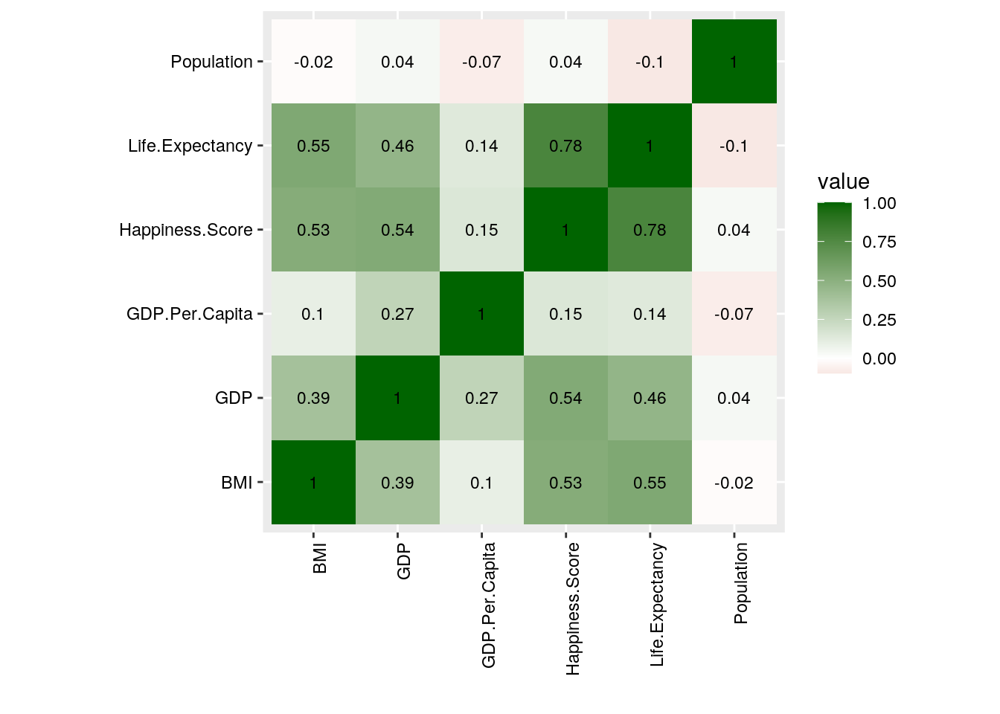
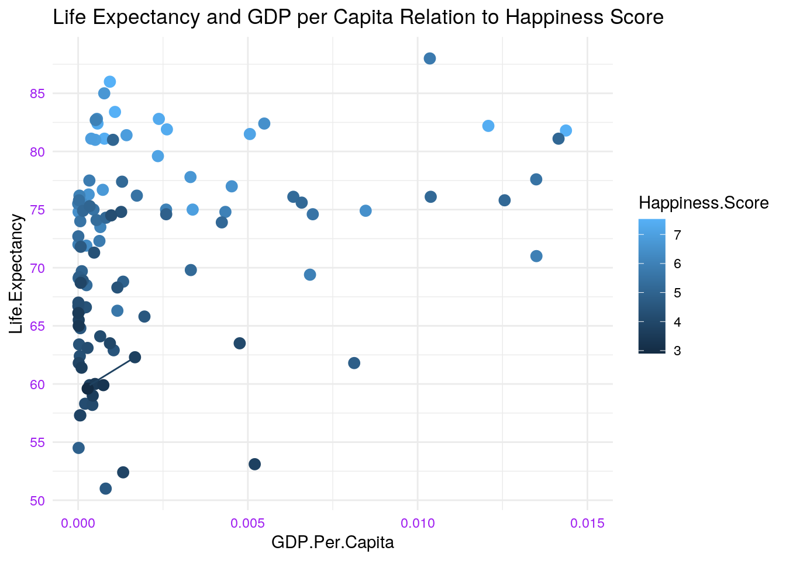
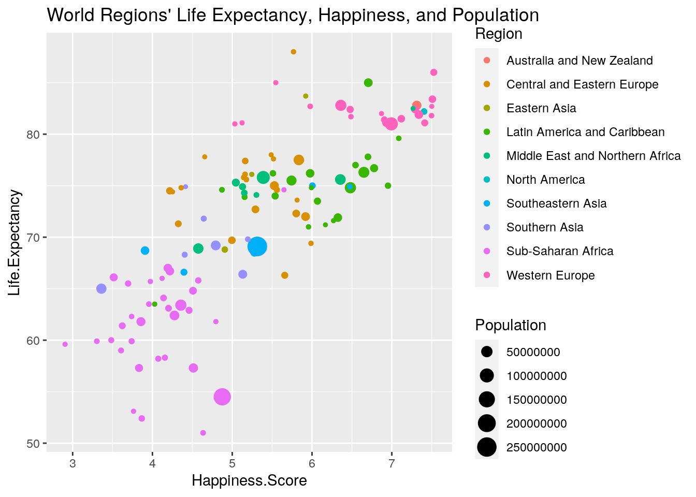
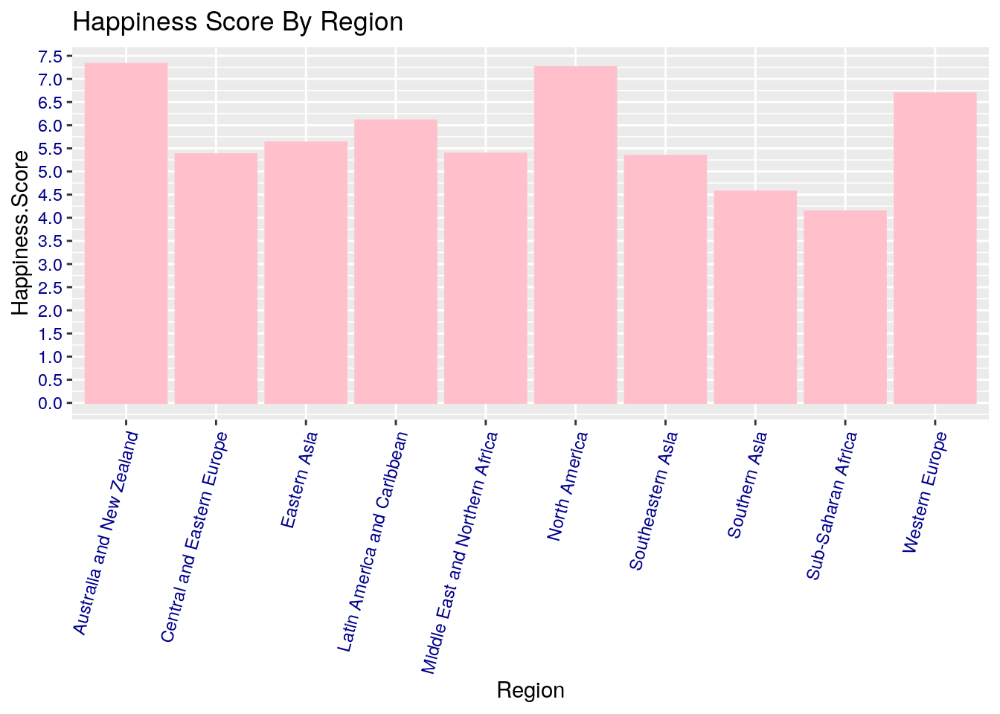
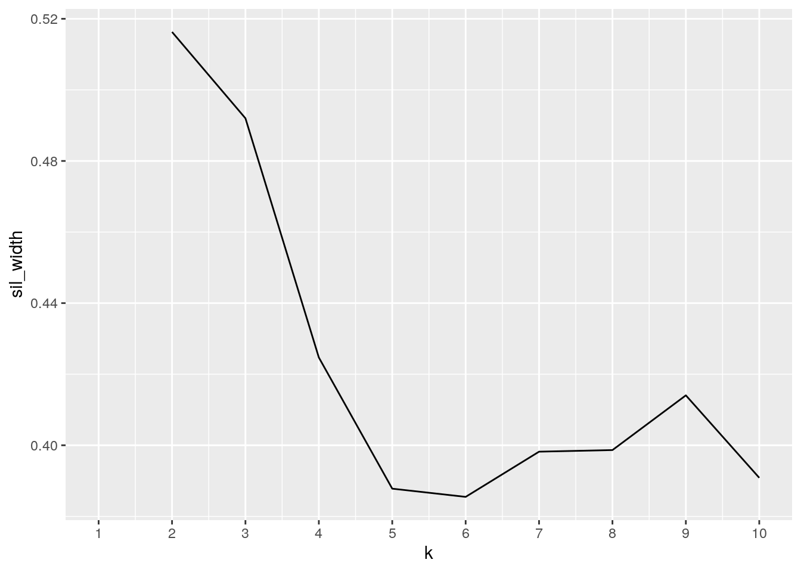
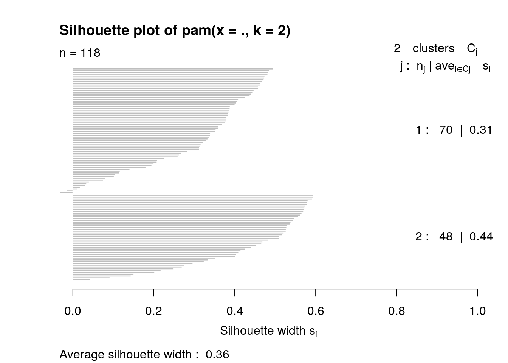
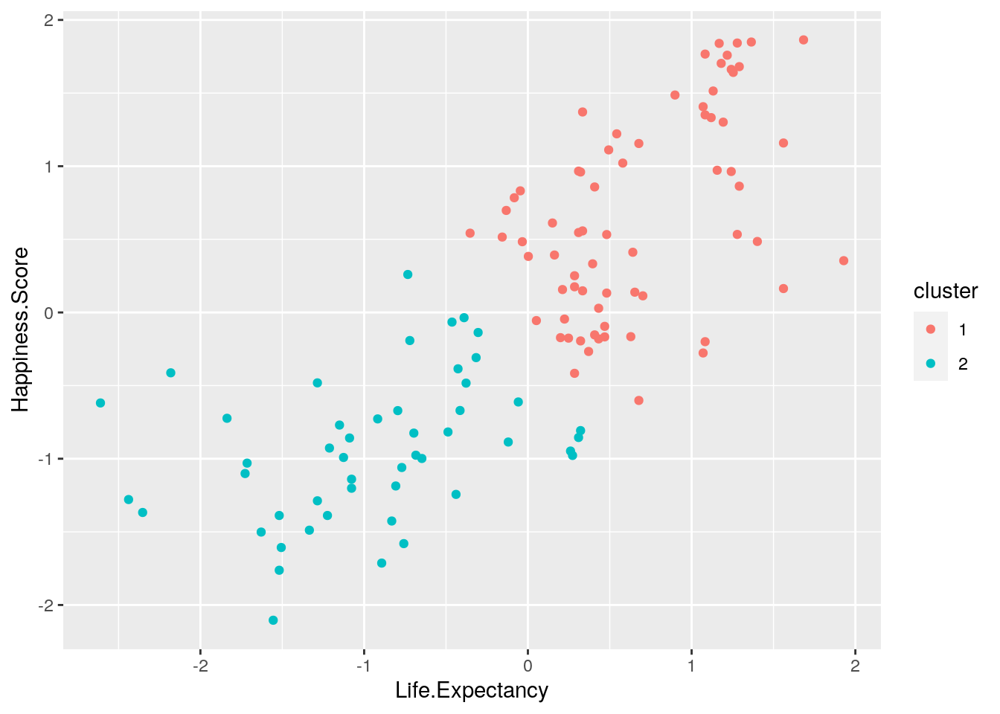

library(tidyverse)
happy <- read_csv("happy.csv")
health <- read_csv("health.csv")
head(happy)## # A tibble: 6 x 13
## Country Region `Happiness Rank` `Happiness Scor… `Lower Confiden…
## <chr> <chr> <dbl> <dbl> <dbl>
## 1 Denmark Weste… 1 7.53 7.46
## 2 Switze… Weste… 2 7.51 7.43
## 3 Iceland Weste… 3 7.50 7.33
## 4 Norway Weste… 4 7.50 7.42
## 5 Finland Weste… 5 7.41 7.35
## 6 Canada North… 6 7.40 7.34
## # … with 8 more variables: `Upper Confidence Interval` <dbl>, `Economy (GDP per
## # Capita)` <dbl>, Family <dbl>, `Health (Life Expectancy)` <dbl>,
## # Freedom <dbl>, `Trust (Government Corruption)` <dbl>, Generosity <dbl>,
## # `Dystopia Residual` <dbl>happya <- happy[-c(3, 5:13)]
head(happya)## # A tibble: 6 x 3
## Country Region `Happiness Score`
## <chr> <chr> <dbl>
## 1 Denmark Western Europe 7.53
## 2 Switzerland Western Europe 7.51
## 3 Iceland Western Europe 7.50
## 4 Norway Western Europe 7.50
## 5 Finland Western Europe 7.41
## 6 Canada North America 7.40head(health)## # A tibble: 6 x 22
## Country Year Status `Life expectanc… `Adult Mortalit… `infant deaths` Alcohol
## <chr> <dbl> <chr> <dbl> <dbl> <dbl> <dbl>
## 1 Afghan… 2015 Devel… 65 263 62 0.01
## 2 Afghan… 2014 Devel… 59.9 271 64 0.01
## 3 Afghan… 2013 Devel… 59.9 268 66 0.01
## 4 Afghan… 2012 Devel… 59.5 272 69 0.01
## 5 Afghan… 2011 Devel… 59.2 275 71 0.01
## 6 Afghan… 2010 Devel… 58.8 279 74 0.01
## # … with 15 more variables: `percentage expenditure` <dbl>, `Hepatitis
## # B` <dbl>, Measles <dbl>, BMI <dbl>, `under-five deaths` <dbl>, Polio <dbl>,
## # `Total expenditure` <dbl>, Diphtheria <dbl>, `HIV/AIDS` <dbl>, GDP <dbl>,
## # Population <dbl>, `thinness 1-19 years` <dbl>, `thinness 5-9 years` <dbl>,
## # `Income composition of resources` <dbl>, Schooling <dbl>healtha <- health[-c(3, 5:10, 12:16, 19:22)]
head(healtha)## # A tibble: 6 x 6
## Country Year `Life expectancy` BMI GDP Population
## <chr> <dbl> <dbl> <dbl> <dbl> <dbl>
## 1 Afghanistan 2015 65 19.1 584. 33736494
## 2 Afghanistan 2014 59.9 18.6 613. 327582
## 3 Afghanistan 2013 59.9 18.1 632. 31731688
## 4 Afghanistan 2012 59.5 17.6 670. 3696958
## 5 Afghanistan 2011 59.2 17.2 63.5 2978599
## 6 Afghanistan 2010 58.8 16.7 553. 2883167healthb <- healtha[(healtha$Year == 2015), ]
head(healthb)## # A tibble: 6 x 6
## Country Year `Life expectancy` BMI GDP Population
## <chr> <dbl> <dbl> <dbl> <dbl> <dbl>
## 1 Afghanistan 2015 65 19.1 584. 33736494
## 2 Albania 2015 77.8 58 3954. 28873
## 3 Algeria 2015 75.6 59.5 4133. 39871528
## 4 Angola 2015 52.4 23.3 3696. 2785935
## 5 Antigua and Barbuda 2015 76.4 47.7 13567. NA
## 6 Argentina 2015 76.3 62.8 13467. 43417765healthc <- healthb[-c(2)]
head(healthc)## # A tibble: 6 x 5
## Country `Life expectancy` BMI GDP Population
## <chr> <dbl> <dbl> <dbl> <dbl>
## 1 Afghanistan 65 19.1 584. 33736494
## 2 Albania 77.8 58 3954. 28873
## 3 Algeria 75.6 59.5 4133. 39871528
## 4 Angola 52.4 23.3 3696. 2785935
## 5 Antigua and Barbuda 76.4 47.7 13567. NA
## 6 Argentina 76.3 62.8 13467. 43417765healthc[180, 1] <- "Vietnam"
healthc[179, 1] <- "Venezuela"
healthc[175, 1] <- "United States"
healthc[174, 1] <- "Tanzania"
healthc[173, 1] <- "United Kingdom"
healthc[131, 1] <- "South Korea"
healthc[132, 1] <- "Moldova"
healthc[90, 1] <- "Laos"
healthc[77, 1] <- "Iran"
healthc[44, 1] <- "Czech Republic"
healthc[20, 1] <- "Bolivia"
healthd <- healthc %>% rename(Life.Expectancy = `Life expectancy`)
happyb <- happya %>% rename(Happiness.Score = `Happiness Score`)countrystatus <- left_join(happyb, healthd, by = "Country")
head(countrystatus)## # A tibble: 6 x 7
## Country Region Happiness.Score Life.Expectancy BMI GDP Population
## <chr> <chr> <dbl> <dbl> <dbl> <dbl> <dbl>
## 1 Denmark Western Eu… 7.53 86 58.8 5315. 5683483
## 2 Switzerla… Western Eu… 7.51 83.4 57.4 8990. 8282396
## 3 Iceland Western Eu… 7.50 82.7 61 5734. 33815
## 4 Norway Western Eu… 7.50 81.8 61.2 7455. 518867
## 5 Finland Western Eu… 7.41 81.1 62.1 4245. 5479531
## 6 Canada North Amer… 7.40 82.2 67 43316. 3584861nrow(countrystatus)## [1] 157library(dplyr)
options(scipen = 999)
mutctyst <- countrystatus %>% mutate(GDP.Per.Capita = GDP/Population)
head(mutctyst)## # A tibble: 6 x 8
## Country Region Happiness.Score Life.Expectancy BMI GDP Population
## <chr> <chr> <dbl> <dbl> <dbl> <dbl> <dbl>
## 1 Denmark Weste… 7.53 86 58.8 5315. 5683483
## 2 Switze… Weste… 7.51 83.4 57.4 8990. 8282396
## 3 Iceland Weste… 7.50 82.7 61 5734. 33815
## 4 Norway Weste… 7.50 81.8 61.2 7455. 518867
## 5 Finland Weste… 7.41 81.1 62.1 4245. 5479531
## 6 Canada North… 7.40 82.2 67 43316. 3584861
## # … with 1 more variable: GDP.Per.Capita <dbl>mutctyst %>% summarize_all(function(x) sum(is.na(x)))## # A tibble: 1 x 8
## Country Region Happiness.Score Life.Expectancy BMI GDP Population
## <int> <int> <int> <int> <int> <int> <int>
## 1 0 0 0 13 15 29 37
## # … with 1 more variable: GDP.Per.Capita <int>mutctyst %>% summarize_all(function(x) mean(!is.na(x)))## # A tibble: 1 x 8
## Country Region Happiness.Score Life.Expectancy BMI GDP Population
## <dbl> <dbl> <dbl> <dbl> <dbl> <dbl> <dbl>
## 1 1 1 1 0.917 0.904 0.815 0.764
## # … with 1 more variable: GDP.Per.Capita <dbl>mutctyst %>% group_by(Country) %>% arrange(desc(BMI))## # A tibble: 157 x 8
## # Groups: Country [157]
## Country Region Happiness.Score Life.Expectancy BMI GDP Population
## <chr> <chr> <dbl> <dbl> <dbl> <dbl> <dbl>
## 1 Kuwait Middl… 6.24 74.7 71.4 28975. NA
## 2 United… North… 7.10 79.3 69.6 NA NA
## 3 Malta Weste… 6.49 81.7 69.6 23819. 431874
## 4 Qatar Middl… 6.38 78.2 69.3 66347. NA
## 5 Saudi … Middl… 6.38 74.5 68.2 2733. NA
## 6 New Ze… Austr… 7.33 81.6 67.5 3822. NA
## 7 Canada North… 7.40 82.2 67 43316. 3584861
## 8 Austra… Austr… 7.31 82.8 66.6 56554. 23789338
## 9 United… Weste… 6.72 81.2 66.6 NA NA
## 10 Spain Weste… 6.36 82.8 66.6 25684. 46447697
## # … with 147 more rows, and 1 more variable: GDP.Per.Capita <dbl>mutctyst %>% filter(Happiness.Score > mean(Happiness.Score, na.rm = TRUE)) %>%
arrange(GDP)## # A tibble: 78 x 8
## Country Region Happiness.Score Life.Expectancy BMI GDP Population
## <chr> <chr> <dbl> <dbl> <dbl> <dbl> <dbl>
## 1 Peru Latin… 5.74 75.5 55.6 63.3 31376671
## 2 Kazakh… Centr… 5.92 72 53.1 160. 17544126
## 3 Nicara… Latin… 5.99 74.8 54 296. 68235
## 4 Italy Weste… 5.98 82.7 63.6 349. 673582
## 5 Paragu… Latin… 5.54 74 5.2 419. 6639119
## 6 Somalia Sub-S… 5.44 55 24.3 427. NA
## 7 Ecuador Latin… 5.98 76.2 54.2 626. 16144368
## 8 Colomb… Latin… 6.48 74.8 57.9 645. 48228697
## 9 Costa … Latin… 7.09 79.6 6.5 1146. 487852
## 10 Luxemb… Weste… 6.87 82 61.3 1200. 56964
## # … with 68 more rows, and 1 more variable: GDP.Per.Capita <dbl>mutctyst %>% group_by(Region) %>% na.omit %>% summarize_if(is.numeric,
c(mean = mean)) %>% pivot_longer(-Region) %>% separate(name,
into = c("var", "stat"), sep = "_") %>% pivot_wider(names_from = "Region",
values_from = "value")## # A tibble: 6 x 12
## var stat `Australia and … `Central and Ea… `Eastern Asia` `Latin America …
## <chr> <chr> <dbl> <dbl> <dbl> <dbl>
## 1 Happ… mean 7.31 5.26 5.36 6.07
## 2 Life… mean 82.8 74.7 76.2 74.8
## 3 BMI mean 66.6 48.7 38.2 47.1
## 4 GDP mean 56554. 5774. 13096. 6214.
## 5 Popu… mean 23789338 5879334. 1080380 10246376.
## 6 GDP.… mean 0.00238 0.0486 0.0929 0.0701
## # … with 6 more variables: `Middle East and Northern Africa` <dbl>, `North
## # America` <dbl>, `Southeastern Asia` <dbl>, `Southern Asia` <dbl>,
## # `Sub-Saharan Africa` <dbl>, `Western Europe` <dbl>mutctyst %>% select_if(is.numeric) %>% na.omit %>% cor## Happiness.Score Life.Expectancy BMI GDP
## Happiness.Score 1.0000000 0.78203225 0.52610243 0.54102845
## Life.Expectancy 0.7820323 1.00000000 0.55358648 0.46489238
## BMI 0.5261024 0.55358648 1.00000000 0.38944879
## GDP 0.5410285 0.46489238 0.38944879 1.00000000
## Population 0.0388351 -0.09574976 -0.01594841 0.04204119
## GDP.Per.Capita 0.1514822 0.13529485 0.09848509 0.27099222
## Population GDP.Per.Capita
## Happiness.Score 0.03883510 0.15148219
## Life.Expectancy -0.09574976 0.13529485
## BMI -0.01594841 0.09848509
## GDP 0.04204119 0.27099222
## Population 1.00000000 -0.07274153
## GDP.Per.Capita -0.07274153 1.00000000mutctyst %>% group_by(Country) %>% arrange(desc(GDP.Per.Capita))## # A tibble: 157 x 8
## # Groups: Country [157]
## Country Region Happiness.Score Life.Expectancy BMI GDP Population
## <chr> <chr> <dbl> <dbl> <dbl> <dbl> <dbl>
## 1 Israel Middl… 7.27 82.5 64.9 35729. 8381
## 2 Sri La… South… 4.42 74.9 23.4 3845. 2966
## 3 Trinid… Latin… 6.17 71.2 47.1 17322. 13692
## 4 Lithua… Centr… 5.81 73.6 62.4 14252. 29491
## 5 Croatia Centr… 5.49 78 63.7 11580. 42364
## 6 Japan Easte… 5.92 83.7 29 34474. 127141
## 7 Iceland Weste… 7.50 82.7 61 5734. 33815
## 8 Surina… Latin… 6.27 71.6 58.3 8819. 55328
## 9 Albania Centr… 4.66 77.8 58 3954. 28873
## 10 Georgia Centr… 4.25 74.4 56.2 3765. 37171
## # … with 147 more rows, and 1 more variable: GDP.Per.Capita <dbl>mutctyst %>% group_by(Region) %>% na.omit %>% summarize_if(is.numeric,
c(sd = sd))## # A tibble: 10 x 7
## Region Happiness.Score… Life.Expectancy… BMI_sd GDP_sd Population_sd
## <chr> <dbl> <dbl> <dbl> <dbl> <dbl>
## 1 Austr… NA NA NA NA NA
## 2 Centr… 0.571 4.25 21.3 4618. 9156722.
## 3 Easte… 0.516 7.45 12.7 18578. 1642422.
## 4 Latin… 0.746 4.05 21.0 5654. 14352078.
## 5 Middl… 0.864 3.70 3.37 11773. 27599125.
## 6 North… NA NA NA NA NA
## 7 South… 0.960 3.58 9.86 3248. 102526622.
## 8 South… 0.616 3.31 3.08 1293. 14650761.
## 9 Sub-S… 0.542 4.97 9.26 2443. 33534943.
## 10 Weste… 0.802 1.35 13.2 16025. 20196307.
## # … with 1 more variable: GDP.Per.Capita_sd <dbl>mutctyst %>% filter(Population > median(Population, na.rm = TRUE)) %>%
arrange(desc(Happiness.Score))## # A tibble: 60 x 8
## Country Region Happiness.Score Life.Expectancy BMI GDP Population
## <chr> <chr> <dbl> <dbl> <dbl> <dbl> <dbl>
## 1 Denmark Weste… 7.53 86 58.8 5315. 5683483
## 2 Switze… Weste… 7.51 83.4 57.4 8990. 8282396
## 3 Finland Weste… 7.41 81.1 62.1 4245. 5479531
## 4 Canada North… 7.40 82.2 67 43316. 3584861
## 5 Nether… Weste… 7.34 81.9 62.1 44293. 16939923
## 6 Austra… Austr… 7.31 82.8 66.6 56554. 23789338
## 7 Sweden Weste… 7.29 82.4 59.5 5585. 9799186
## 8 Austria Weste… 7.12 81.5 57.6 43666. 8633169
## 9 Germany Weste… 6.99 81 62.3 41177. 81686611
## 10 Belgium Weste… 6.93 81.1 63.7 4357. 11274196
## # … with 50 more rows, and 1 more variable: GDP.Per.Capita <dbl>mutctyst %>% select_if(is.numeric) %>% na.omit %>% cor %>% as.data.frame %>%
rownames_to_column %>% pivot_longer(-1) %>% ggplot(aes(rowname,
name, fill = value)) + geom_tile() + geom_text(aes(label = round(value,
2)), color = "black", size = 3) + xlab("") + ylab("") + coord_fixed() +
theme(axis.text.x = element_text(color = "Black", angle = 90,
hjust = 1)) + theme(axis.text.y = element_text(color = "Black",
hjust = 1)) + scale_fill_gradient2(low = "dark red", mid = "white",
high = "dark green")
ggplot(data = mutctyst, aes(x = GDP.Per.Capita, y = Life.Expectancy,
color = Happiness.Score)) + geom_point(size = 3) + geom_line(aes(group = Happiness.Score)) +
theme_minimal() + xlim(0, 0.015) + theme(axis.text.x = element_text(color = "Purple")) +
theme(axis.text.y = element_text(color = "Purple")) + ggtitle("Life Expectancy and GDP per Capita Relation to Happiness Score") +
scale_y_continuous(breaks = seq(50, 90, 5))
ggplot(mutctyst, aes(Happiness.Score, Life.Expectancy)) + geom_point(aes(color = Region,
size = Population)) + ggtitle("World Regions' Life Expectancy, Happiness, and Population")
mutctyst %>% ggplot(aes(Region, Happiness.Score)) + geom_bar(stat = "summary",
fun = "mean", color = "Pink", fill = "Pink") + scale_y_continuous(breaks = seq(0,
8, 0.5)) + theme(axis.text.x = element_text(color = "Dark Blue",
angle = 75, hjust = 1)) + theme(axis.text.y = element_text(color = "Dark Blue",
hjust = 1)) + ggtitle("Happiness Score By Region")
library(cluster)
library(plotly)
ctyns <- mutctyst %>% select(-Country, -Region) %>% na.omit
ctysc <- ctyns %>% scale %>% as.data.frame()
pamproj <- ctysc %>% pam(k = 2)
pamproj$silinfo$avg.width## [1] 0.3613848HL <- ctysc %>% select(Life.Expectancy, Happiness.Score)
sil_width <- vector()
for (i in 2:10) {
pam_fit <- pam(HL, k = i)
sil_width[i] <- pam_fit$silinfo$avg.width
}
ggplot() + geom_line(aes(x = 1:10, y = sil_width)) + scale_x_continuous(name = "k",
breaks = 1:10)
plot(pamproj, which = 2)
clustproj <- ctysc %>% dplyr::select(Life.Expectancy, Happiness.Score)
set.seed(348)
kmeansproj <- clustproj %>% kmeans(2)
kmeansproj## K-means clustering with 2 clusters of sizes 69, 49
##
## Cluster means:
## Life.Expectancy Happiness.Score
## 1 0.6715538 0.6631871
## 2 -0.9456575 -0.9338758
##
## Clustering vector:
## [1] 1 1 1 1 1 1 1 1 1 1 1 1 1 1 1 1 1 1 1 1 1 1 1 1 1 1 1 1 1 1 1 1 1 1 1 1 1
## [38] 1 1 1 1 1 1 1 1 2 1 1 1 1 1 1 1 1 1 2 1 1 2 1 2 1 1 1 1 1 1 2 1 1 1 1 2 2
## [75] 2 1 2 2 1 2 2 2 2 2 2 2 2 2 2 2 2 2 2 2 2 2 2 2 2 2
## [ reached getOption("max.print") -- omitted 18 entries ]
##
## Within cluster sum of squares by cluster:
## [1] 50.64384 35.33764
## (between_SS / total_SS = 63.3 %)
##
## Available components:
##
## [1] "cluster" "centers" "totss" "withinss" "tot.withinss"
## [6] "betweenss" "size" "iter" "ifault"kmeansclust <- clustproj %>% mutate(cluster = as.factor(kmeansproj$cluster))
kmeansclust %>% ggplot(aes(Life.Expectancy, Happiness.Score,
color = cluster)) + geom_point()